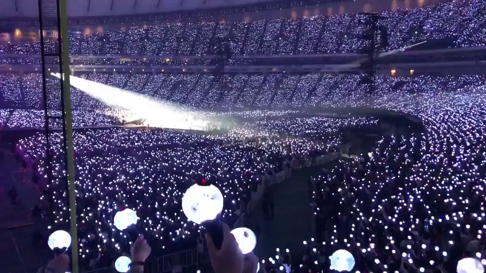
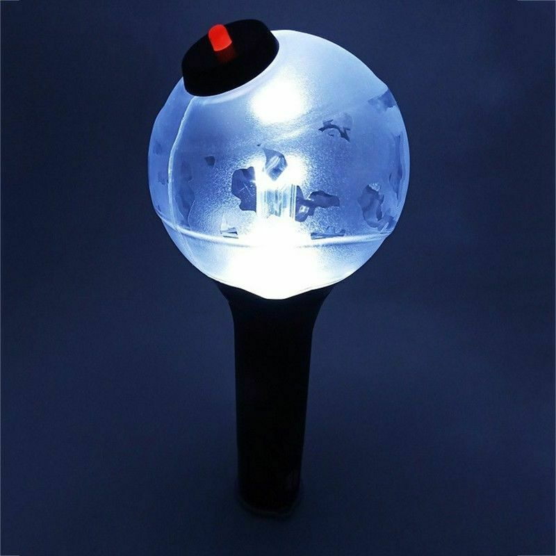
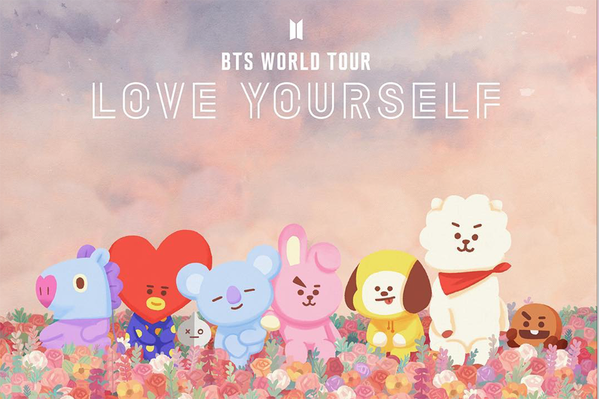

ARMY(Adorable Represetatives MC for Youth)-поклонники BTS совокупно называются. Они один из крупнейших фэндомов в мире. С самого начала BTS строили доверительные отношения с фанатами, что помогло им завоевать популярность и удерживать первые места в чартах, несмотря на то, что их лейбл не входит в «большую тройку» в Корее.
С английского языка слово «army» переводится как «армия». Подобную отсылку к полюбившейся BTS военной символике не заметить невозможно, тем более что изначальной концепцией группы было «защищать подростков от давления и предрассудков». Сама по себе аббревиатура АРМИ расшифровывается как «Очаровательный представитель М.С. для молодежи».
 BTS повлияли на жизнь фанатов, они добиваются множества результатов, делясь своими хорошими способностями, распространяя позитив и объединяя людей в реальности. ARMY поддерживают BTS, разделяя идею распространения доброго влияния и позитива в этом мире. ARMY добровольно создают аккаунты для рекламы, перевода и распространения сообщений участников BTS.
«BTS и их крылья, АРМИ»
BT21- это коллекция различных персонажей, созданных LINE FRIENDS и участниками группы. BTS, и сделано это было определенно для того, чтобы свести ARMY с ума. А название для них придумал Шуга: музыкант сказал, что оно должно объединять в себе название группы и 21 век, чтобы их малыши жили еще сотню лет!
Идея BT21 возникла еще в сентябре 2017 года: отрисованные персонажи, каждый из которых «принадлежит» одному из участников группы, задумывались как стикеры для обмена в приложениях типа LINE или Facebook Messanger. Поначалу многие пользователи даже не знали, что эти чудики были созданы членами самой популярной в мире к-поп группы.
Всего в семействе 8 персонажей:
1.Tata — милый инопланетянин с головой в виде сердца, нарисованный Ви (V).
2.Забавный танцующий пони Mang — персонаж Джей-Хоупа (J-Hope).
3.Очень непослушная печенька Shooky, которая ненавидит молоко, — полет фантазии Шуги (Suga).
4.Чудесный желтый щенок Chimmy, который, по словам Чимина (Jimin), идеально символизирует все творчество группы.
5.Заяц-спортсмен Cooky, которого придумал Чонгук (Jungkook), обожающий тренировки в тренажерном зале.
6.Добряш-альпака RJ от Джина (Jin), который надевает курточку, когда ему холодно.
7.Соня-коала Koya нежно-голубого цвета, созданная лидером группы RM.
8.И, наконец, черно-белый Van, придуманный дизайнерами компании LINE Friends. Это космический робот, который символизирует всех ARMY.
created with
Website Builder Software .